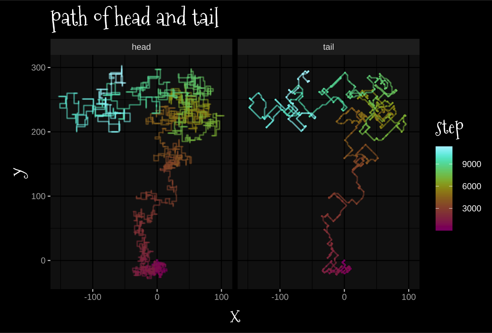

library(tidyverse)
library(ggdark)
library(khroma)
library(showtext)
library(scales)
font_add_google(name = "Mountains of Christmas", family = "christmas")
font_add(family = "Noto Emoji", regular = file.path(font_paths()[2], "NotoEmoji-VariableFont_wght.ttf"))
showtext_auto()
theme_set(dark_theme_gray() +
theme(title = element_text(family = "christmas", size = 20)))
knitr::knit_hooks$set(crop = knitr::hook_pdfcrop)Day 9
R
list()Part 1
Ok… step 1 I think is a function for calculating the distance between H and T.
Head <- c(2,2)
Tail <- c(1,1)
x <- (Head - Tail)^2
max(x)[1] 1Ok, I think if \(\max((H-T)^2) <=1\) then we don’t update, otherwise, update.
move_decision <- function(Head, Tail){
distance <- (Head-Tail) ^2
return(max(distance) > 1)
}move_decision(c(0,0), c(0,1))[1] FALSEmove_decision(c(0,0), c(1,0))[1] FALSEmove_decision(c(0,0), c(1,1))[1] FALSEmove_decision(c(0,0), c(0,2))[1] TRUEmove_decision(c(0,0), c(1,2))[1] TRUENow, decide which way to move.
## 1 Dim
Head <- c(0,0)
Tail <- c(0,2)
Head - Tail[1] 0 -2Can’t just do \(\frac{H-T}{2}\) because of the diagonal case
## 2 dim
Head <- c(0,0)
Tail <- c(1,2)
Head - Tail[1] -1 -2I think I can just use their sign though!
## 1 dim
Head <- c(0,0)
Tail <- c(0,2)
sign(Head - Tail)[1] 0 -1## 2 dim
Head <- c(0,0)
Tail <- c(1,2)
sign(Head - Tail)[1] -1 -1move_vector <- function(Head, Tail){
sign(Head-Tail)
}Ok, let’s load up the data and plan our history management.
route <- read_table("2022-12-9_assets/input.txt", col_names = FALSE)
── Column specification ────────────────────────────────────────────────────────
cols(
X1 = col_character(),
X2 = col_double()
)route |> head()# A tibble: 6 × 2
X1 X2
<chr> <dbl>
1 U 1
2 L 1
3 D 2
4 U 2
5 R 2
6 D 1I’ll make all steps explicit by multiplying out X1 by X2 times
full_route <-
route |>
mutate(all_steps = map2(X1, X2, ~tibble(step = rep(.x, .y)))) |>
select(all_steps) |>
unnest(cols = all_steps) |>
mutate(step_num = (1:n()) + 1)I think I’ll pre-compile an empty list to store head and tail states.
Head_list <- vector(mode = "list", length = max(full_route$step_num))
Tail_list <- vector(mode = "list", length = max(full_route$step_num))Initial state
Head_list[[1]] <- c(0,0)
Tail_list[[1]] <- c(0,0)Now, a function to return update move for the Head given U, D, L, R. I’ll make it a function but it could just be a named list
Head_move <- function(dir){
move_list <- list(
U = c(0,1),
D = c(0,-1),
L = c(-1,0),
R = c(1,0)
)
return(move_list[[dir]])
}Now, a function that takes:
Head move direction
step number
the Head states
the Tail states
And updates the Head and Tail states.
Ok, I hate this… but I’m going to use the global variables.
Head_Tail_update <- function(dir, step){
Head_prev <- Head_list[[step-1]]
Tail_prev <- Tail_list[[step-1]]
head_movement <- Head_move(dir)
Head_now <- Head_prev + head_movement
if(move_decision(Head_now, Tail_prev)){
tail_movement <- move_vector(Head_now, Tail_prev)
Tail_now <- Tail_prev + tail_movement
} else {
Tail_now <- Tail_prev
}
Head_list[[step]] <<- Head_now
Tail_list[[step]] <<- Tail_now
return()
}x <- map2(full_route$step, full_route$step_num, Head_Tail_update)tail_pos_df <-
Tail_list |>
reduce(rbind) |>
data.frame() |>
mutate(part = "tail",
step = 1:n())
head_pos_df <-
Head_list |>
reduce(rbind) |>
data.frame() |>
mutate(part = "head",
step = 1:n())
all_pos <- bind_rows(tail_pos_df, head_pos_df)all_pos |>
ggplot(aes(X1, X2, color = step)) +
geom_path(linewidth = 1) +
coord_fixed()+
scale_color_hawaii()+
labs(x = "x",
y = "y",
title = "path of head and tail")+
facet_wrap(~part)
Part 2
Ok, I think I can keep a lot of my functions the same, just the Tail state is now a list of 9 vectors, and every head movement involves updating the tail state 9 times.
Head_list <- rep(list(c(0,0)), max(full_route$step_num))
Tail_list <- map(1:max(full_route$step_num), ~rep(list(c(0,0)), 9))Head_Tail_update2 <- function(dir, step){
Head_prev <- Head_list[[step-1]]
head_movement <- Head_move(dir)
Head_now <- Head_prev + head_movement
Head_list[[step]] <<- Head_now
reference <- Head_now
for(i in 1:9){
Tail_prev <- Tail_list[[step-1]][[i]]
if(move_decision(reference, Tail_prev)){
tail_movement <- move_vector(reference, Tail_prev)
Tail_now <- Tail_prev + tail_movement
} else {
Tail_now <- Tail_prev
}
reference <- Tail_now
Tail_list[[step]][[i]] <<- Tail_now
}
return()
}x <- map2(full_route$step, full_route$step_num, Head_Tail_update2)map(Tail_list, ~.x[[9]]) |>
reduce(rbind) |>
data.frame() |>
unique() |>
nrow()[1] 2458tail_pos_df <-
map(Tail_list, ~.x[[9]]) |>
reduce(rbind) |>
data.frame() |>
mutate(part = "tail",
step = 1:n())
## head_pos_df the same
all_pos <- bind_rows(tail_pos_df, head_pos_df)all_pos |>
ggplot(aes(X1, X2, color = step)) +
geom_path(linewidth = 1) +
coord_fixed()+
scale_color_hawaii()+
labs(x = "x",
y = "y",
title = "path of head and tail")+
facet_wrap(~part)